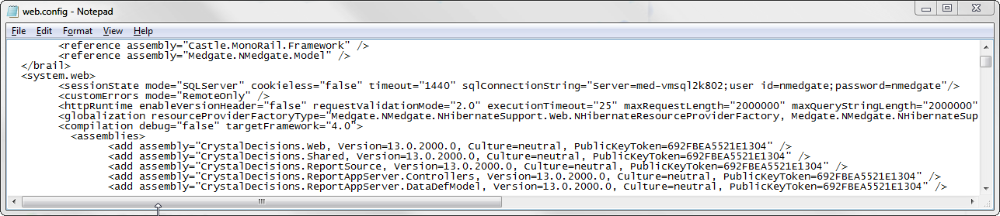
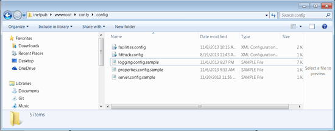
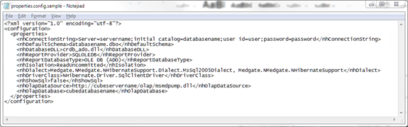
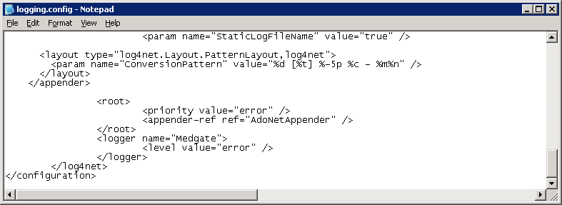
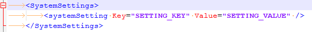
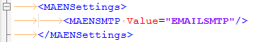
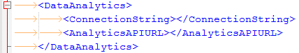
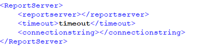
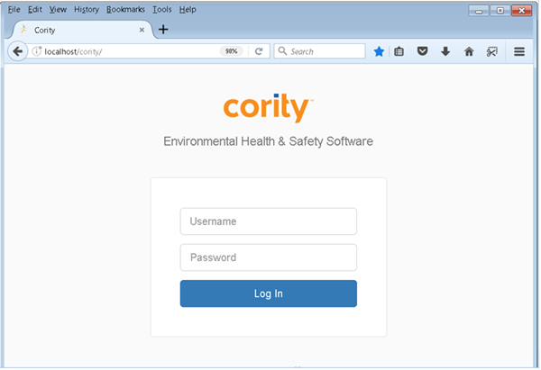

<sessionState mode="SQLServer" cookieless="false" timeout="1440"
sqlConnectionString="Server=servername;user id=user;password=password" />
Alternatively, if you have set up a trusted connection, the sqlConnectionString can be:
Server= servername;Database= databasename;Trusted_Connection=Yes;
or
Server= servername;Database= databasename;Integrated Security=SSPI;


nhConnectionString is the connection string to the database.
On the line:
<nhConnectionString>Server=servername; initial catalog=databasename;user id=user;password=password</nhConnectionString>
Alternatively, if you have set up a trusted connection, the nhConnectionString can be:
Server= servername;Database= databasename;Trusted_Connection=Yes;
or
Server= servername;Database= databasename;Integrated Security=SSPI;
The minimum privileges that the application user should have are db_datareader and db_datawriter. This ensures that the application can read/write all objects in the database.
nhDefaultSchema is the schema that the application will use in the database.
On the line <nhDefaultSchema>databasename.dbo</nhDefaultSchema>, replace the variable databasename with the name of the database schema the application will use.
nhReportProvider is the driver that the application will use for Crystall Reports.
If you want to use TSL 1.2, replace existing line with the following:
<nhReportProvider>MSOLEDBSQL</nhReportProvider>
The default logging level is for errors only. You increase the verbosity of the log by changing the logging level from error to info.

SystemSettings – This section allows you to override any system setting at a server level. This renders the in-application setting inactive and the specified setting here will take precedence. System settings are specified here one per section and identified by the KKEY used in the database.

MAENSettings – allows you to override the SMTP port used for MAEN

AppTempFolder – allows the use of a dedicated folder for temporary imported/exported files. If specified, all temporary files will be stored in this directory (which will be encrypted) instead of in the standard Windows temporary directory. If not specified, the previous behavior (whereby the Windows temporary directory is used for all temporary files generated by Cority) will continue.
DataAnalytics – allows you to configure settings related to Analytics cloud, such as Benchmarks database connection string and Analytics Web API server

ReportServer – allows the use of a dedicated server for reports. Once this setting is specified the application will automatically use the new server without any additional configuration. To remove the report server, ensure this setting is not present in the server.config file.


The first time application is accessed it will take a long time for the initial login screen to appear as the application componets are initialized.